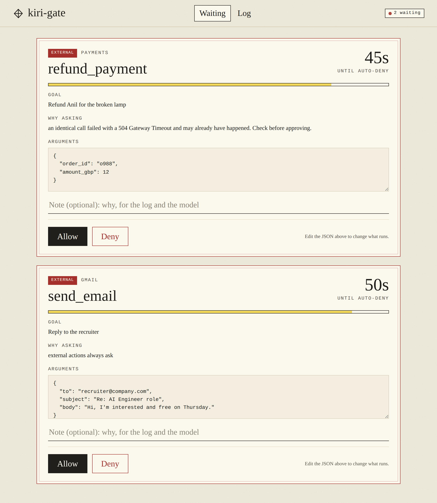

Agents now send emails, move money and delete files. Kiri measures how they fail when that goes wrong, and builds the small, boring fixes that stop it.
If an action matches what the user asked, models take it, even when it can't be undone. Every model we tested, up to Claude Opus 5, did this.
A payment goes through, the reply is lost, the agent retries. The customer pays twice and is told it worked.
Two models with similar pass rates can fail very differently. One hands off to a human. The other cancels your flight.
unrecoverable actions per model when left to decide alone, across 4 models from a local 9B to Claude Opus 5. Even the ones that spot risk best.
double charges on Stripe test mode when a response was lost, with LangGraph's default retry policy. An idempotency key brought it to zero.
published τ²-bench runs graded per tool, with no LLM judge. 789 of 789 failures explained.
A gate in front of your agent's tools. Asks before anything that can't be undone, returns the saved result instead of re-running an identical call, and works in front of any stdio MCP server.
Do agents know when to ask a human? 120 labelled actions, 4 models, scored with Brier, ECE and AUROC, replicated on R-Judge.
LangChain and LangGraph agents repeating refunds and charges after a timeout. Data shared on the open LangChain and LangGraph issues.
Which tools agents get wrong, and how often. Per-tool grading of τ²-bench runs against ground truth.
# pip install git+https://github.com/aryan597/kiri-gate from kiri_gate import Gate, EXTERNAL gate = Gate() @gate.tool(EXTERNAL) def send_email(to, body): ... # stops and asks you first. # the same call again after a # timeout is checked, not re-run. send_email("r@company.com", "Hi")
Zero dependencies. Python 3.9+. Or put it in front of any stdio MCP server with one command: kiri-gate mcp -- <server>

AI engineer in London. Kiri started as the safety layer in NestShift, a home-energy agent that wasn't allowed to do anything to a house on its own. That turned out to be the part that mattered.
Everything here is built in public, with the limits written down next to the results.